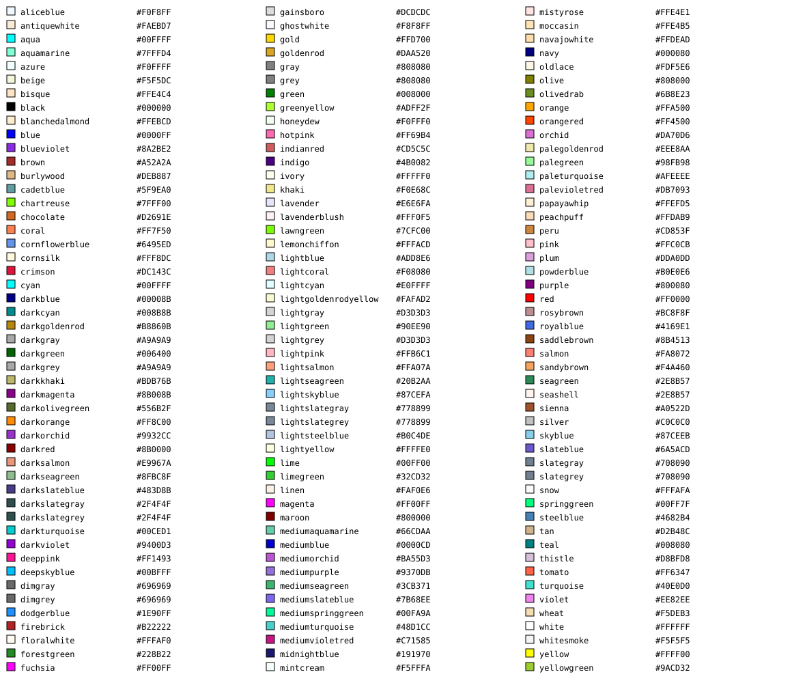

View
View is an object that contains the information of the data to be visualized. One Application is composed by a set of Views.
Arguments
- border: An optional string or table with the stroke color. Colors can be described as strings using a color name, an RGB value (Ex. {0, 0, 0}), or a HEX value (see https://www.w3.org/wiki/CSS/Properties/color/keywords).
- color: An optional table with the colors for the attributes. Colors can be described as strings using a color name, an RGB value, a HEX value, or even as a string with a ColorBrewer format (see http://www.colorbrewer2.org). The available color names are:

These colors are defined by www.w3.org (see https://www.w3.org/TR/SVG/types.html#ColorKeywords). The colors available in ColorBrewer format and the maximum number of slices for each of them are:
| Name | Max |
|---|---|
| Accent, Dark, Set2 | 7 |
| Pastel2, Set1 | 8 |
| Pastel1 | 9 |
| PRGn, RdYlGn, Spectral | 10 |
| BrBG, Paired, PiYG, PuOr, RdBu, RdGy, RdYlBu, Set3 | 11 |
| BuGn, BuPu, OrRd, PuBu | 19 |
| Blues, GnBu, Greens, Greys, Oranges, PuBuGn, PuRd, Purples, RdPu, Reds, YlGn, YlGnBu, YlOrBr, YlOrRd | 20 |
- decimal: An optional integer to allow reduce the number of decimals used for layer coordinates. Default value is 5.
- download: An optional boolean to allow its data to be downloaded from a link available in the created web page. Default value is false.
- icon: An optional table or string. A table with the icon properties, such as path, color and transparency. The property path uses SVG notation (see https://www.w3.org/TR/SVG/paths.html). A string with the name of marker icon. The markers available are: "airport", "animal", "bigcity", "bus", "car", "caution", "cycling", "database", "desert", "diving", "fillingstation", "finish", "fire", "firstaid", "fishing", "flag", "forest", "harbor", "helicopter", "home", "horseriding", "hospital", "lake", "motorbike", "mountains", "radio", "restaurant", "river", "road", "shipwreck" and "thunderstorm".
- label: An optional string or table of strings that describes the labels to be shown in the Legend.
- max: The maximum value of the attribute (used only for numbers).
- min: The minimum value of the attribute (used only for numbers).
- missing: An optional number that replaces all attributes read from a data source that do not have any value. If this argument is not set and there is some attribute without a value, TerraME will stop with an error.
- name: An optional string with the name of the attribute to be visualized over time. This argument is mandatory when using time equals to 'creation'.
- report: An optional argument that describes what happens when the user clicks in a given object of the View. It can be a Report or a user-defined function that creates a report for each spatial object of that view.
- select: An optional string with the name of the attribute to be visualized.
- slices: Number of colors to be used for drawing. It must be an integer number greater than one.
- time: An optional string with the temporal mode. The possible values are: 'snapshot' and 'creation'.
- transparency: An optional argument with the opacity of color attribute. The transparency parameter is a number between 0.0 (fully opaque) and 1.0 (fully transparent). The default value is 0.
- value: An optional table with the possible values for the selected attributes. This argument is mandatory when using color or icon.
- visible: An optional boolean whether the layer is visible. Default value is true.
- width: An optional argument with the stroke width in pixels.
Usage
import("publish")
local view = View{
title = "Emas National Park",
description = "A small example related to a fire spread model.",
border = "blue",
width = 2,
color = "PuBu",
select = "river",
value = {0, 1, 2}
}
print(vardump(view))Functions
| loadColors | Internal function to load View colors. |
loadColors
Internal function to load View colors. Do not use it.
Usage
view:loadColors()